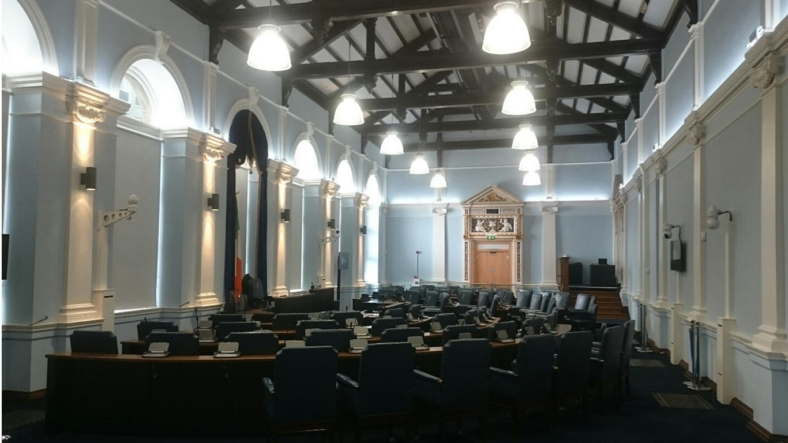

-

- 
| LEINSTER HOUSE REFURBISHMENT | |
|---|---|
| Budget | €13 million |
| Construction Start | April 2017 |
| Estimated Completion Date | September 2020 |
| Project Description | Part of works to refurbish Leinster House, the brief included both enabling works and works to the main house. The enabling works included the provision of a temporary Seanad location, a new lift, ramped entrance and relocation of services to allow for essential works to the main house. The works to the main house included the upgrading of fire protections, structural strengthening and restoration of historic elements. |
| Links | Click here to access the Oireachtas website which gives an overview of the history and buildings in and around Leinster House. The current works to Historic Leinster House are detailed here along with progress tracking.
To the right of this table is a video giving a tour through Leinster House before works started. The youtube link for this can be found by clicking here. |